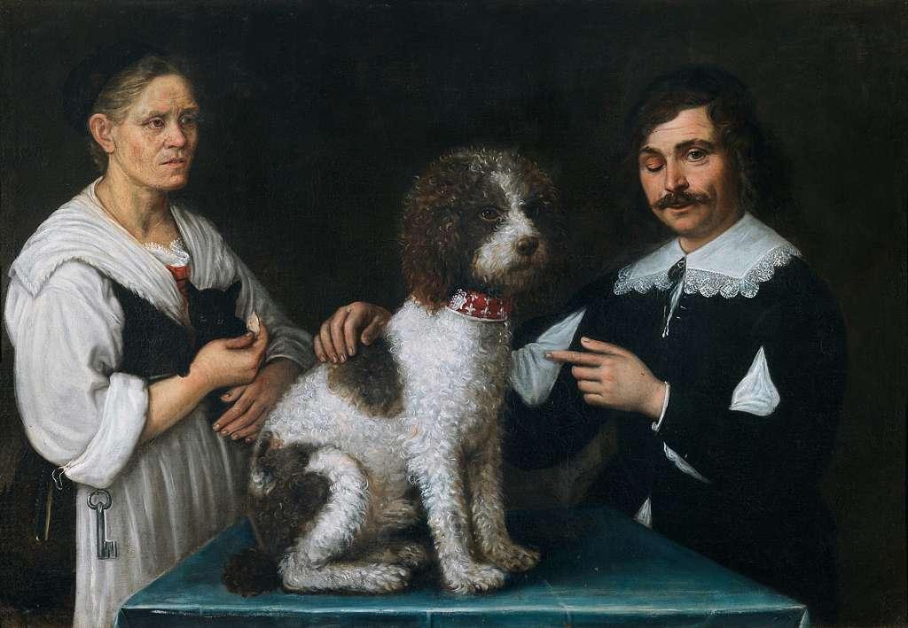

Biografia
Paolo Antonio Barbieri è stato un pittore italiano specializzato soprattutto nella rappresentazione di nature morte. Apprese dal fratello maggiore Giovanni Francesco, detto il Guercino, le tecniche pittoriche di base. Il Guercino aiutò Paolo Antonio nella realizzazione pratica di alcune sue opere, aggiungendovi figure. Inizialmente legato alle tecniche chiaroscurali del fratello, Paolo Antonio si distaccò da questo stile, per affiancarsi ad un maggior naturalismo pittorico, preservando l'impiego di colori sgargianti che aveva iniziato ad applicare sin dai primi anni di attività. Morì prematuramente a 46 anni a Bologna nel 1649, prima del Guercino.

Paolo Antonio Barbieri